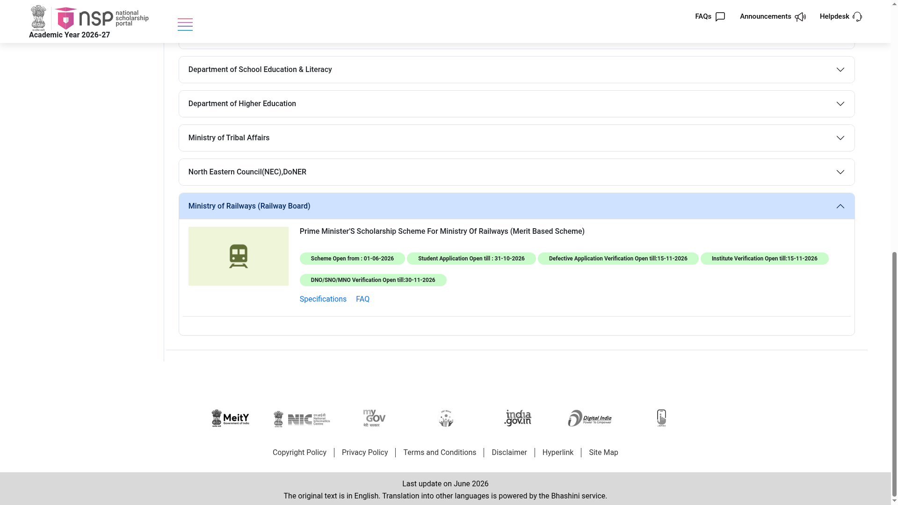

PM Scholarship (PMSS) for RPF/RPSF wards 2026-27: Rs 2,500-3,000 per month, apply on NSP by 31 October
The Prime Minister's Scholarship Scheme (PMSS) for the Ministry of Railways is open on the National Scholarship Portal for 2026-27. It supports the dependent wards and widows of ex-serving and serving RPF/RPSF personnel (below the rank of Gazetted officer) studying professional degree courses, paying Rs 2,500 per month to male students and Rs 3,000 per month to female students. Student applications close on 31 October 2026.
Who can apply
- Dependent wards and widows of ex-serving or serving RPF/RPSF personnel below the rank of Gazetted officer
- Regular admission in 2026-27 to the first year of a professional degree course - BE, B.Tech, MBBS, BDS, B.Ed, BBA, BBS, BCA, MCA, B.Pharma, 5-year integrated LLB and similar courses recognised by AICTE, MCI, UGC, NCTE or other government regulatory bodies
- Master's degrees are not eligible, except MBA and MCA
- At least 60% marks (or equivalent grade) in the minimum entry qualification - 12th standard, diploma or graduation depending on the course
- The college or institute must be registered on AISHE with a valid AISHE code
- Not eligible: distance learning courses, students studying abroad
What you get (from the official guidelines)
- Rs 2,500 per month for male students (Rs 30,000 per year)
- Rs 3,000 per month for female students (Rs 36,000 per year)
- Duration: two to five years, matching the course duration
- Selected fresh applicants receive a personal letter from the Hon'ble Prime Minister
- Payment by Direct Benefit Transfer through PFMS to an Aadhaar-seeded bank account
Key dates (checked 20 October 2026)
- Scheme opened: 1 June 2026
- Student applications close: 31 October 2026
- Defective application verification and institute verification: 15 November 2026
- DNO/SNO/MNO verification: 30 November 2026
How to apply: step by step

- Keep documents ready: for wards of serving personnel, the service certificate issued by the office (prescribed proforma in the guidelines); for ex-personnel and widows, a copy of the PPO or discharge certificate; the marksheet of your minimum entry qualification (12th, diploma or graduation); Aadhaar; an Aadhaar-seeded bank account in a nationalised bank; a mobile number for OTP registration (a maximum of two registrations per mobile number).

- Complete OTR with Aadhaar face authentication (AadhaarFaceRD app), then log in with your OTR number.
- Choose "Prime Minister's Scholarship Scheme For Ministry Of Railways", fill the form and upload the documents.
- Submit before 31 October 2026. Your institute verifies by 15 November; correct any defective marking before the same date. Zonal Railways and RPSF then verify, and the Security Directorate, Railway Board prepares the merit list for the PMO.
- Renewal each year: apply on NSP with your application ID and upload a college certificate showing you passed the previous class in the same academic year - failing or discontinuing disqualifies future renewal.
Watch: apply step by step
- Malayalam: NSP Prime Minister's Scholarship Scheme 2025-26 - Rs 2,500-3,000 monthly, RPF/RPSF wards scholarship - insight360, November 2025 (Malayalam captions verified). Covers this exact scheme.
- English: NSP Scholarship 2026-27 - How to Apply Online Step-by-Step - MahaConnectDigital, September 2026 (English captions verified). Covers the shared NSP OTR and application flow.
We could not find a reliable English apply video made specifically for the RPF/RPSF PMSS - the English video above covers the shared NSP apply flow, which is the same for this scheme. These videos are by independent creators, not the government - always cross-check with the official sources below. Details above are from the NSP All-Scholarships page and the Ministry of Railways PMSS guidelines on NSP, checked 20 October 2026.
Sources: NSP All Scholarships - PM Scholarship Scheme For Ministry Of Railways, PMSS for RPF (Ministry of Railways) - official guidelines. Checked 20 October 2026. Explainer by AiCoN - not a government publication.